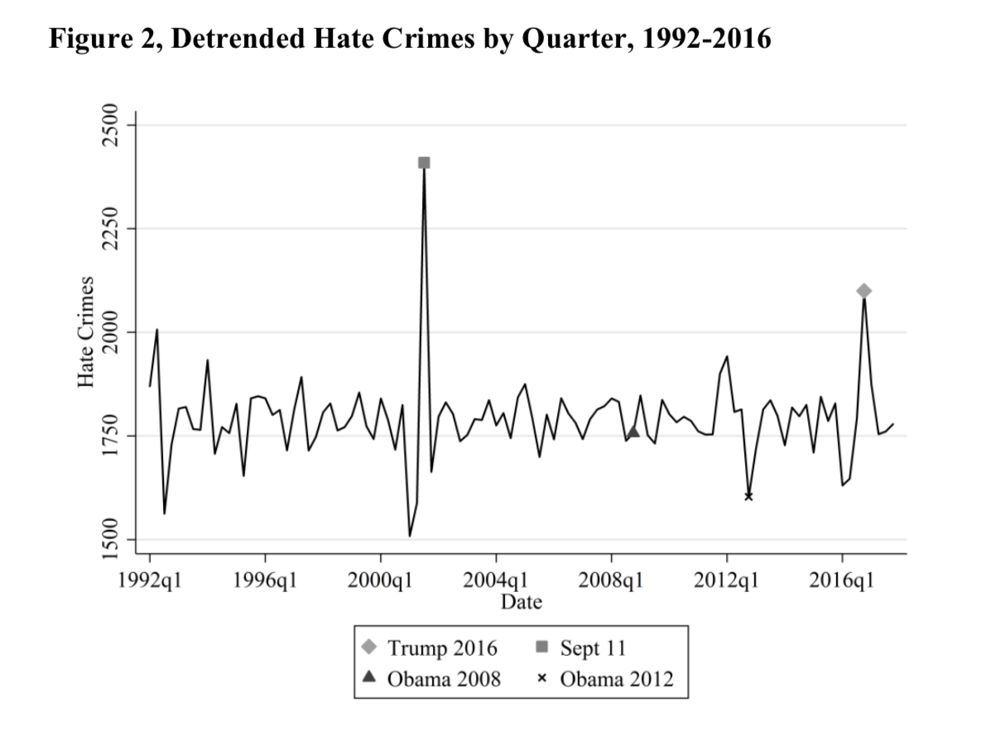
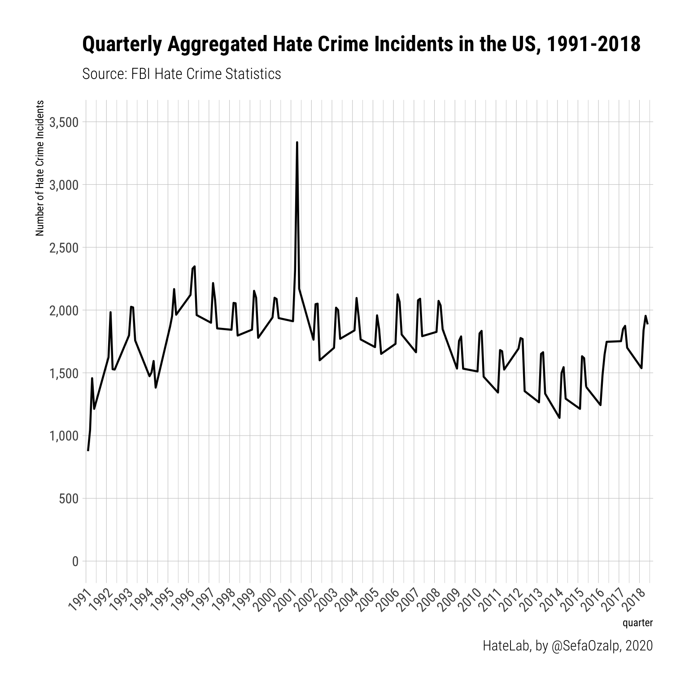
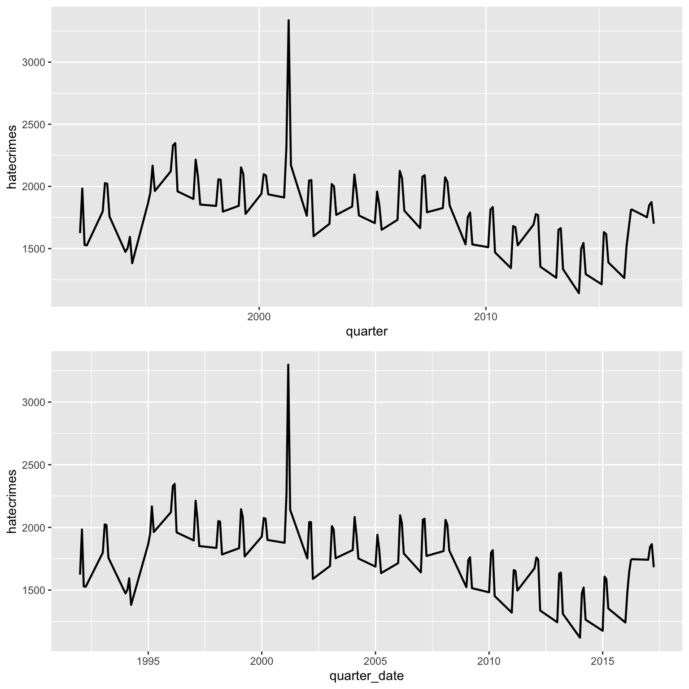
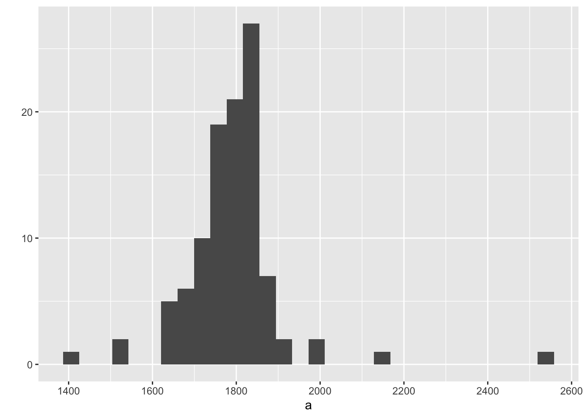
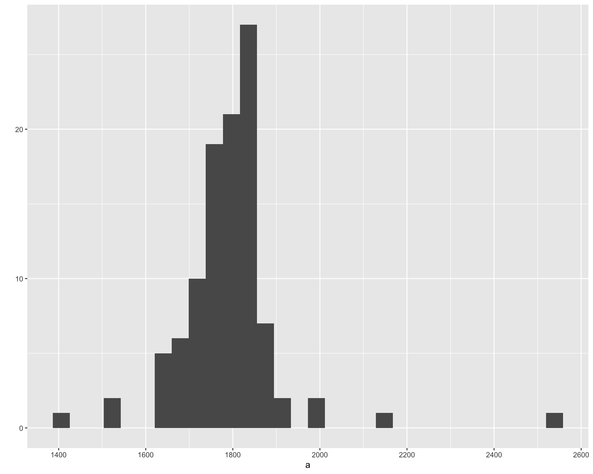
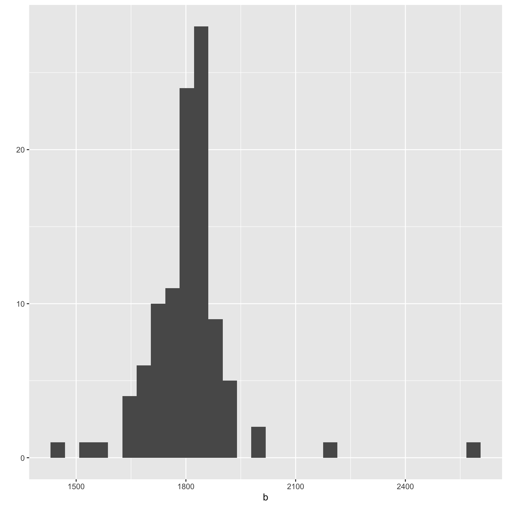

Detrending National Hate Crime Figures in the US, 1991-2018
Sefa Ozalp
2019-11-15
Last updated: 2020-07-01
Checks: 7 0
Knit directory: fbi_hate_crimes_data_viz/
This reproducible R Markdown analysis was created with workflowr (version 1.4.0). The Checks tab describes the reproducibility checks that were applied when the results were created. The Past versions tab lists the development history.
Great! Since the R Markdown file has been committed to the Git repository, you know the exact version of the code that produced these results.
Great job! The global environment was empty. Objects defined in the global environment can affect the analysis in your R Markdown file in unknown ways. For reproduciblity it’s best to always run the code in an empty environment.
The command set.seed(20191114) was run prior to running the code in the R Markdown file. Setting a seed ensures that any results that rely on randomness, e.g. subsampling or permutations, are reproducible.
Great job! Recording the operating system, R version, and package versions is critical for reproducibility.
Nice! There were no cached chunks for this analysis, so you can be confident that you successfully produced the results during this run.
Great job! Using relative paths to the files within your workflowr project makes it easier to run your code on other machines.
Great! You are using Git for version control. Tracking code development and connecting the code version to the results is critical for reproducibility. The version displayed above was the version of the Git repository at the time these results were generated.
Note that you need to be careful to ensure that all relevant files for the analysis have been committed to Git prior to generating the results (you can use wflow_publish or wflow_git_commit). workflowr only checks the R Markdown file, but you know if there are other scripts or data files that it depends on. Below is the status of the Git repository when the results were generated:
Ignored files:
Ignored: .DS_Store
Ignored: .Rhistory
Ignored: .Rproj.user/
Ignored: data/.DS_Store
Ignored: data/data_2016/.DS_Store
Ignored: data/data_2016/Hate Crime Statistics 2016 Tables/.DS_Store
Ignored: data/data_2017/.DS_Store
Ignored: data/data_2017/raw/.DS_Store
Ignored: data/data_2017/raw/Hate Crime Statistics 2017 Tables/.DS_Store
Ignored: data/data_2018/.DS_Store
Ignored: data/data_2018/Tables And Data Declarations/.DS_Store
Ignored: data/data_2018/Tables And Data Declarations/Participation Table/.DS_Store
Ignored: data/data_2018/Tables And Data Declarations/Table 1/.DS_Store
Ignored: data/data_2018/Tables And Data Declarations/Table 10/.DS_Store
Ignored: data/data_2018/Tables And Data Declarations/Table 11/.DS_Store
Ignored: data/data_2018/Tables And Data Declarations/Table 12/.DS_Store
Ignored: data/data_2018/Tables And Data Declarations/Table 13/.DS_Store
Ignored: data/data_2018/Tables And Data Declarations/Table 14/.DS_Store
Ignored: data/data_2018/Tables And Data Declarations/Table 2/.DS_Store
Ignored: data/data_2018/Tables And Data Declarations/Table 3/.DS_Store
Ignored: data/data_2018/Tables And Data Declarations/Table 4/.DS_Store
Ignored: data/data_2018/Tables And Data Declarations/Table 5/.DS_Store
Ignored: data/data_2018/Tables And Data Declarations/Table 6/.DS_Store
Ignored: data/data_2018/Tables And Data Declarations/Table 7/.DS_Store
Ignored: data/data_2018/Tables And Data Declarations/Table 8/.DS_Store
Ignored: data/data_2018/Tables And Data Declarations/Table 9/.DS_Store
Ignored: data/edwards_data/.DS_Store
Ignored: data/open_ICPSR/.DS_Store
Ignored: data/ucrpd/.DS_Store
Ignored: data/ucrpd/data_1992/.DS_Store
Ignored: data/ucrpd/data_1992/ds1_batch_header/.DS_Store
Ignored: data/ucrpd/data_1992/ds2_incident_record/.DS_Store
Ignored: data/ucrpd/data_1993/.DS_Store
Ignored: data/ucrpd/data_1993/ICPSR_24240/.DS_Store
Ignored: data/ucrpd/data_1994/
Ignored: data/ucrpd/data_1995/
Ignored: data/ucrpd/data_1996/
Ignored: data/ucrpd/data_1997/
Ignored: data/ucrpd/data_1998/
Ignored: data/ucrpd/data_1999/
Ignored: data/ucrpd/data_2000/
Ignored: data/ucrpd/data_2001/
Ignored: data/ucrpd/data_2002/
Ignored: data/ucrpd/data_2003/
Ignored: data/ucrpd/data_2004/
Ignored: data/ucrpd/data_2005/
Ignored: data/ucrpd/data_2006/
Ignored: data/ucrpd/data_2007/
Ignored: data/ucrpd/data_2008/
Ignored: data/ucrpd/data_2009/
Ignored: data/ucrpd/data_2010/
Ignored: data/ucrpd/data_2011/
Ignored: data/ucrpd/data_2012/
Ignored: data/ucrpd/data_2013/
Ignored: data/ucrpd/data_2014/
Ignored: data/ucrpd/data_2015/
Ignored: data/ucrpd/data_2016/
Ignored: data/ucrpd/data_2017/
Ignored: data/ucrpd/data_2018/
Ignored: data/ucrpd/data_2019/
Ignored: docs/.DS_Store
Ignored: src/.DS_Store
Untracked files:
Untracked: data/open_ICPSR/ucr_hate_crimes_1991_2018_rda.zip
Untracked: data/open_ICPSR/ucr_hate_crimes_1991_2018_rda/
Note that any generated files, e.g. HTML, png, CSS, etc., are not included in this status report because it is ok for generated content to have uncommitted changes.
These are the previous versions of the R Markdown and HTML files. If you’ve configured a remote Git repository (see ?wflow_git_remote), click on the hyperlinks in the table below to view them.
| File | Version | Author | Date | Message |
|---|---|---|---|---|
| rmd | 767c812 | Sefa Ozalp | 2020-07-01 | merge anti arab with anti muslim |
| html | 76c47fd | Sefa Ozalp | 2020-07-01 | Build site. |
| rmd | 1e43434 | Sefa Ozalp | 2020-07-01 | update 2018 data and add quarter comparison |
| html | b0ef67a | Sefa Ozalp | 2020-06-17 | Build site. |
| rmd | 4e79e92 | Sefa Ozalp | 2020-06-17 | add LGBTI analysis |
| html | e6cf489 | Sefa Ozalp | 2020-06-17 | Build site. |
| rmd | 2f5b149 | Sefa Ozalp | 2020-06-17 | fix titles and typos |
| html | cd25ee0 | Sefa Ozalp | 2020-06-17 | Build site. |
| rmd | 81c1529 | Sefa Ozalp | 2020-06-17 | wflow_publish(“analysis/fbi_hate_crimes_quarterly.rmd”) |
| html | 232a116 | Sefa Ozalp | 2020-02-26 | Build site. |
| rmd | d1f8069 | Sefa Ozalp | 2020-02-26 | wflow_publish(“analysis/fbi_hate_crimes_quarterly.rmd”) |
| html | 32106bf | Sefa Ozalp | 2020-02-26 | Build site. |
| rmd | 71469eb | Sefa Ozalp | 2020-02-26 | workflowr::wflow_publish(“analysis/fbi_hate_crimes_quarterly.rmd”) |
| html | d15e97b | Sefa Ozalp | 2019-12-12 | Build site. |
| rmd | f379d7c | Sefa Ozalp | 2019-12-12 | drop Q1 stuff |
| html | 2d115e2 | Sefa Ozalp | 2019-12-12 | Build site. |
| html | 632cd83 | Sefa Ozalp | 2019-12-12 | Build site. |
| rmd | a8e8007 | Sefa Ozalp | 2019-12-12 | wflow_publish(c(“analysis/fbi_hate_crimes_1992.rmd”, |
| html | b8e45e7 | Sefa Ozalp | 2019-12-12 | Build site. |
| rmd | 38e517f | Sefa Ozalp | 2019-12-12 | wflow_publish(c(“analysis/fbi_hate_crimes_1992.rmd”, |
| html | c9ae999 | Sefa Ozalp | 2019-12-12 | Build site. |
| rmd | 5fdefcd | Sefa Ozalp | 2019-12-12 | wflow_publish(c(“analysis/fbi_hate_crimes_1992.rmd”, |
| html | 7020e81 | Sefa Ozalp | 2019-11-19 | Build site. |
| rmd | ba72196 | Sefa Ozalp | 2019-11-19 | polish yearly plot |
| html | 6a41988 | Sefa Ozalp | 2019-11-19 | Build site. |
| html | 559c7f0 | Sefa Ozalp | 2019-11-19 | Build site. |
| rmd | 4db356f | Sefa Ozalp | 2019-11-19 | add title references |
| html | f002d4f | Sefa Ozalp | 2019-11-19 | Build site. |
| rmd | 7e57593 | Sefa Ozalp | 2019-11-19 | correct type in the titles |
| html | 68b4e47 | Sefa Ozalp | 2019-11-19 | Build site. |
| rmd | bdd6b5e | Sefa Ozalp | 2019-11-19 | update titles |
| html | aaf80dd | Sefa Ozalp | 2019-11-19 | Build site. |
| html | ae0c3e2 | Sefa Ozalp | 2019-11-19 | Build site. |
| rmd | d2b4f78 | Sefa Ozalp | 2019-11-19 | large commit with data using the data from Edwards |
| html | d2b4f78 | Sefa Ozalp | 2019-11-19 | large commit with data using the data from Edwards |
| html | 9277573 | Sefa Ozalp | 2019-11-15 | Build site. |
| rmd | cff9d6e | Sefa Ozalp | 2019-11-15 | analysis/index.Rmd |
| html | e368ec1 | Sefa Ozalp | 2019-11-15 | Build site. |
| rmd | 5e93796 | Sefa Ozalp | 2019-11-15 | update index |
| html | 5e93796 | Sefa Ozalp | 2019-11-15 | update index |
| rmd | 7627c7c | Sefa Ozalp | 2019-11-15 | wip FBI data plots |
| html | 7627c7c | Sefa Ozalp | 2019-11-15 | wip FBI data plots |
Introduction
This document will recreate the Figure 2 from the ‘The Effect of President Trump’s Election on Hate Crimes’ paper (Rushin and Edwards 2018). A screenshot of the plot is provided below 
In this line chart, the authors illustrate a detrended time series of the number of quarterly aggregated hate crimes in the US, as recorded in the FBI dataset between 1992 and 2017. Even after detrending the dataset, we observe a very large spike after 9/11. The second largest spike is after Trump’s election. Citing (Hamilton 2018), the authors argue against using Hodrick-Prescott filter to detrend the seasonality in the data and use linear regression to subtract the quarterly and yearly effects. The authors do not provide data not the code in the paper but they might make both available on request.
Sub-tasks
The sub-tasks to recreate the graph are as follows:
- Find the data of hate crimes between 1992 and 2018 on FBI website.
- Import and process the data.
- Detrend the data using the same methodology as (Rushin and Edwards 2018).
- Reproduce the graph.
Reproducing the Figure Using the Data from the Paper
library(tidyverse)
library(lubridate)
library(scales)
knitr::opts_chunk$set(fig.width=10, fig.height=8)edwards <- haven::read_dta(here::here("/data/edwards_data/sefaozalp.dta")) %>%
filter(!year %in% c(1985:1991) ) %>%
filter(!is.na(hatecrimes)) %>%
mutate(year_fct=as.factor(year), quarter_fct=as.factor(quarter))
linear_model <- lm(hatecrimes~year_fct+quarter_fct, data = edwards)Regression results
summary(linear_model)
Call:
lm(formula = hatecrimes ~ year_fct + quarter_fct, data = edwards)
Residuals:
Min 1Q Median 3Q Max
-0.809 -0.631 -0.559 -0.474 301.191
Coefficients:
Estimate Std. Error t value Pr(>|t|)
(Intercept) 0.484576 0.037291 12.995 < 2e-16 ***
year_fct1993 0.074678 0.049936 1.495 0.134789
year_fct1994 -0.056334 0.049935 -1.128 0.259262
year_fct1995 0.102244 0.049935 2.048 0.040606 *
year_fct1996 0.166683 0.049932 3.338 0.000843 ***
year_fct1997 0.109271 0.049934 2.188 0.028648 *
year_fct1998 0.083748 0.049931 1.677 0.093490 .
year_fct1999 0.092995 0.049933 1.862 0.062548 .
year_fct2000 0.104078 0.049932 2.084 0.037125 *
year_fct2001 0.232612 0.049933 4.658 3.19e-06 ***
year_fct2002 0.060869 0.049935 1.219 0.222859
year_fct2003 0.061860 0.049934 1.239 0.215409
year_fct2004 0.074423 0.049934 1.490 0.136112
year_fct2005 0.034325 0.049934 0.687 0.491827
year_fct2006 0.077647 0.049933 1.555 0.119940
year_fct2007 0.070178 0.049935 1.405 0.159905
year_fct2008 0.083307 0.049935 1.668 0.095256 .
year_fct2009 -0.009620 0.049935 -0.193 0.847228
year_fct2010 -0.008831 0.049935 -0.177 0.859620
year_fct2011 -0.042409 0.049935 -0.849 0.395726
year_fct2012 -0.011658 0.049936 -0.233 0.815400
year_fct2013 -0.066591 0.049935 -1.334 0.182352
year_fct2014 -0.101956 0.049934 -2.042 0.041170 *
year_fct2015 -0.074865 0.049933 -1.499 0.133792
year_fct2016 -0.044155 0.049931 -0.884 0.376521
year_fct2017 0.037715 0.049935 0.755 0.450082
quarter_fct2 0.085000 0.019585 4.340 1.43e-05 ***
quarter_fct3 0.091694 0.019586 4.682 2.85e-06 ***
quarter_fct4 0.004990 0.019585 0.255 0.798906
---
Signif. codes: 0 '***' 0.001 '**' 0.01 '*' 0.05 '.' 0.1 ' ' 1
Residual standard error: 3.958 on 326764 degrees of freedom
Multiple R-squared: 0.0004988, Adjusted R-squared: 0.0004132
F-statistic: 5.824 on 28 and 326764 DF, p-value: < 2.2e-16Detrend Data Using Residuals
edwards$predictions= predict(linear_model, edwards)
edwards$residuals= resid(linear_model)
edwards$mean= mean(edwards$hatecrimes)
edwards$hatedetrend=edwards$residuals+edwards$mean
edwards_processed <- edwards %>%
arrange(date) %>%
group_by(date, year, quarter) %>%
summarise(hatedetrend=sum(hatedetrend), predictions=sum(predictions), residuals=sum(residuals), mean=sum(mean)) %>%
ungroup() %>%
mutate(quarter_str=paste(as.character(year), as.character(quarter),sep = "-")) %>%
mutate(quarter_date= yq(quarter_str))
edwards_processed# A tibble: 104 x 9
date year quarter hatedetrend predictions residuals mean quarter_str
<dbl> <dbl> <dbl> <dbl> <dbl> <dbl> <dbl> <chr>
1 128 1992 1 1893. 1523. 100. 1792. 1992-1
2 129 1992 2 1986. 1790. 193. 1792. 1992-2
3 130 1992 3 1511. 1811. -282. 1792. 1992-3
4 131 1992 4 1780. 1538. -12.2 1792. 1992-4
5 132 1993 1 1833. 1757. 41.4 1792. 1993-1
6 133 1993 2 1792. 2024. -0.247 1792. 1993-2
7 134 1993 3 1766. 2045. -26.3 1792. 1993-3
8 135 1993 4 1777. 1773. -14.9 1792. 1993-4
9 136 1994 1 1920. 1346. 127. 1792. 1994-1
10 137 1994 2 1684. 1613. -109. 1792. 1994-2
# … with 94 more rows, and 1 more variable: quarter_date <date>Reproduce the Plot
Finally, we can reproduce the plot.
legend_points <- tibble(quarter_date= dmy(c("01-10-2016", "01-10-2012", "01-10-2008", "01-07-2001")),
labels= c("Trump 2016", "Obama 2012", "Obama 2008", "9/11")) %>%
left_join(edwards_processed) %>%
arrange(quarter_date)Joining, by = "quarter_date"edwards_processed %>%
ggplot(aes(x=quarter_date, y=hatedetrend))+
geom_line(size=0.8)+
scale_y_continuous(labels = comma, limits = c(1400, 2600), breaks = seq(1500,3500,250), minor_breaks = NULL)+
scale_x_date(breaks = seq.Date(dmy("01-01-1992"), dmy("31-12-2018"), by= "2 year"),
date_labels = "%Y",
limits = c(lubridate::dmy("01-01-1992"), lubridate::dmy("31-12-2018")),
expand=c(0,0))+
hrbrthemes::theme_ipsum_rc()+
labs(title = "Detrended Quarterly Hate Crime in the US, 1991-2018",
y="Number of Hate Crime Incidents (Detrended)",
x= "Date (Quarter)",
subtitle = "Source: FBI Hate Crime Statistics",
caption = "Hate Lab, by @SefaOzalp, 2019"
)+
theme(plot.caption = element_text(size = 12))+
theme(axis.text.x = element_text(angle=45, hjust = 1))+
geom_point(data=legend_points, aes(x=quarter_date, y= hatedetrend , shape=factor(labels)), size=3.5,colour="grey45" )+
theme(legend.position="bottom")+
scale_shape_manual(values=c( 15,17, 19,18),
name = NULL)+
NULL
Reproduce the Same Plot Using FBI data
# load(here::here("/data/open_ICPSR/ucr_hate_crimes_1992_2017_rda/ucr_hate_crimes_1992_2017.rda"))
load(here::here("/data/open_ICPSR/ucr_hate_crimes_1991_2018_rda/ucr_hate_crimes_1991_2018.rda"))Lets check the raw data aggregated quarterly.
qt_hate <- ucr_hate_crimes_1991_2018 %>%
as.tibble() %>%
filter(!is.na(bias_motivation_offense_1)) %>%
select(contains("year"), contains("date")) %>%
mutate(date= lubridate::ymd(incident_date), # data source changed date to incident_date
quarter= lubridate::quarter(date,with_year = T),
quarter_fct= as.factor(lubridate::quarter(date,with_year = F)),
year_fct=as.factor(year)) %>%
count(quarter, quarter_fct, year, year_fct) %>%
filter(!is.na(quarter)) %>%
rename(hatecrimes=n)Warning: `as.tibble()` is deprecated, use `as_tibble()` (but mind the new semantics).
This warning is displayed once per session.qt_hate %>%
ggplot(aes(x=quarter, y=hatecrimes))+
geom_line(size=0.8)+
scale_x_continuous(breaks = seq(1991,2018,1), expand=c(0.01,0))+
hrbrthemes::theme_ipsum_rc()+
scale_y_continuous(label=comma, breaks = seq(0,3500, 500), limits = c(0,3500), minor_breaks = NULL)+
labs(title = "Quarterly Aggregated Hate Crime Incidents in the US, 1991-2018",
y="Number of Hate Crime Incidents",
subtitle = "Source: FBI Hate Crime Statistics",
caption = "HateLab, by @SefaOzalp, 2020"
)+
theme(plot.caption = element_text(size = 12))+
theme(axis.text.x = element_text(angle=45, hjust = 1))
Compare Raw Numbers
qt_ucr_plot <- qt_hate %>%
ggplot(aes(x=quarter, y=hatecrimes))+
geom_line(size=0.8)
qt_edwards_plot <- edwards %>%
group_by(quarter, year) %>%
summarise(hatecrimes=sum(hatecrimes)) %>%
mutate(quarter_date=dmy(paste( "01", as.character(quarter), as.character(year),sep = "-" ))) %>%
ggplot(aes(x=quarter_date, y=hatecrimes))+
geom_line(size=0.8)
gridExtra::grid.arrange(qt_ucr_plot,qt_edwards_plot, nrow=2 )
Linear Model with UCR Data
lm_ucr_hc <- lm(hatecrimes~ year_fct + quarter_fct, data = qt_hate)Regression results
summary(linear_model)
Call:
lm(formula = hatecrimes ~ year_fct + quarter_fct, data = edwards)
Residuals:
Min 1Q Median 3Q Max
-0.809 -0.631 -0.559 -0.474 301.191
Coefficients:
Estimate Std. Error t value Pr(>|t|)
(Intercept) 0.484576 0.037291 12.995 < 2e-16 ***
year_fct1993 0.074678 0.049936 1.495 0.134789
year_fct1994 -0.056334 0.049935 -1.128 0.259262
year_fct1995 0.102244 0.049935 2.048 0.040606 *
year_fct1996 0.166683 0.049932 3.338 0.000843 ***
year_fct1997 0.109271 0.049934 2.188 0.028648 *
year_fct1998 0.083748 0.049931 1.677 0.093490 .
year_fct1999 0.092995 0.049933 1.862 0.062548 .
year_fct2000 0.104078 0.049932 2.084 0.037125 *
year_fct2001 0.232612 0.049933 4.658 3.19e-06 ***
year_fct2002 0.060869 0.049935 1.219 0.222859
year_fct2003 0.061860 0.049934 1.239 0.215409
year_fct2004 0.074423 0.049934 1.490 0.136112
year_fct2005 0.034325 0.049934 0.687 0.491827
year_fct2006 0.077647 0.049933 1.555 0.119940
year_fct2007 0.070178 0.049935 1.405 0.159905
year_fct2008 0.083307 0.049935 1.668 0.095256 .
year_fct2009 -0.009620 0.049935 -0.193 0.847228
year_fct2010 -0.008831 0.049935 -0.177 0.859620
year_fct2011 -0.042409 0.049935 -0.849 0.395726
year_fct2012 -0.011658 0.049936 -0.233 0.815400
year_fct2013 -0.066591 0.049935 -1.334 0.182352
year_fct2014 -0.101956 0.049934 -2.042 0.041170 *
year_fct2015 -0.074865 0.049933 -1.499 0.133792
year_fct2016 -0.044155 0.049931 -0.884 0.376521
year_fct2017 0.037715 0.049935 0.755 0.450082
quarter_fct2 0.085000 0.019585 4.340 1.43e-05 ***
quarter_fct3 0.091694 0.019586 4.682 2.85e-06 ***
quarter_fct4 0.004990 0.019585 0.255 0.798906
---
Signif. codes: 0 '***' 0.001 '**' 0.01 '*' 0.05 '.' 0.1 ' ' 1
Residual standard error: 3.958 on 326764 degrees of freedom
Multiple R-squared: 0.0004988, Adjusted R-squared: 0.0004132
F-statistic: 5.824 on 28 and 326764 DF, p-value: < 2.2e-16Detrend Data Using Residuals
qt_hate$predictions= predict(lm_ucr_hc, qt_hate)
qt_hate$residuals= resid(lm_ucr_hc)
qt_hate$mean= mean(qt_hate$hatecrimes)
qt_hate$hatedetrend=qt_hate$residuals+qt_hate$mean
qt_hate %>%
mutate(quarter_date=dmy(paste( "01", as.character( (as.numeric(quarter_fct)*3-2) ), as.character(year_fct),sep = "-" ))) %>%
ggplot(aes(x=quarter_date, y=hatedetrend))+
geom_line(size=0.8)+
scale_y_continuous(labels = comma, limits = c(1250, 2750), breaks = seq(1500,3500,250), minor_breaks = NULL)+
scale_x_date(breaks = seq.Date(dmy("01-01-1991"), dmy("31-12-2018"), by= "1 year"),
date_labels = "%Y-%m",
limits = c(lubridate::dmy("01-01-1991"), lubridate::dmy("31-12-2018")),
expand=c(0,0))+
hrbrthemes::theme_ipsum_rc()+
labs(title = "Detrended Quarterly Hate Crime in the US, 1991-2018",
y="Number of Hate Crime Incidents (Detrended)",
x= "Date (Quarter)",
subtitle = "Source: FBI Hate Crime Statistics",
caption = "Hate Lab, by @SefaOzalp, 2019"
)+
theme(plot.caption = element_text(size = 12))+
theme(axis.text.x = element_text(angle=45, hjust = 1))+
geom_point(data=legend_points, aes(x=quarter_date, y= hatedetrend , shape=factor(labels)), size=4,colour="grey50" )+
theme(legend.position="bottom")+
scale_shape_manual(values=c( 13,15, 17,18),
name = NULL)+
NULL 
Compare Both Models
a <- edwards_processed$hatedetrend
b <- qt_hate$hatedetrend
a [1] 1892.633 1985.563 1510.530 1779.956 1832.982 1791.923 1765.890
[8] 1777.316 1919.633 1683.563 1752.530 1812.956 1814.383 1631.313
[15] 1827.280 1895.706 1866.835 1808.680 1804.640 1690.238 1822.305
[22] 1872.234 1713.086 1761.627 1842.499 1789.344 1764.304 1774.817
[29] 1811.436 1855.281 1773.340 1729.766 1869.620 1750.447 1723.407
[36] 1826.919 1415.766 1542.696 2548.424 1662.937 1831.383 1853.313
[43] 1832.280 1651.706 1767.294 1818.200 1770.167 1813.592 1854.796
[50] 1851.726 1690.613 1772.118 1848.784 1835.681 1703.681 1781.107
[57] 1740.674 1854.595 1772.563 1801.991 1690.133 1843.063 1830.030
[64] 1805.456 1818.883 1800.813 1740.780 1808.206 1822.956 1772.790
[71] 1773.754 1799.183 1779.382 1828.321 1827.276 1733.704 1722.882
[78] 1794.855 1767.742 1883.204 1980.264 1799.194 1761.161 1627.494
[85] 1721.862 1843.791 1829.698 1773.332 1709.980 1798.910 1821.877
[92] 1838.486 1679.861 1844.866 1802.758 1842.339 1649.499 1621.344
[99] 1761.304 2138.817 1893.133 1729.063 1729.030 1817.456b [1] 1664.000 1567.000 1940.500 1960.071 1893.750 1988.750 1494.250
[8] 1754.821 1832.500 1796.500 1751.000 1751.571 1920.000 1687.000
[15] 1736.500 1788.071 1814.750 1634.750 1811.250 1870.821 1866.500
[22] 1811.500 1789.000 1664.571 1822.250 1874.250 1698.750 1736.321
[29] 1840.500 1790.500 1747.000 1753.571 1810.500 1855.500 1761.000
[36] 1704.571 1860.500 1753.500 1703.000 1814.571 1413.750 1550.750
[43] 2535.250 1631.821 1833.750 1852.750 1816.250 1628.821 1762.000
[50] 1818.000 1758.500 1793.071 1861.000 1855.000 1667.500 1748.071
[57] 1849.500 1838.500 1689.000 1754.571 1734.750 1864.750 1764.250
[64] 1767.821 1693.250 1843.250 1814.750 1780.321 1815.500 1798.500
[71] 1722.000 1795.571 1816.250 1773.250 1767.750 1774.321 1789.250
[78] 1828.250 1807.750 1706.321 1722.750 1796.750 1747.250 1864.821
[85] 1980.000 1800.000 1751.500 1600.071 1721.750 1843.750 1816.250
[92] 1749.821 1706.500 1800.500 1806.000 1818.571 1685.750 1840.750
[99] 1785.250 1819.821 1648.000 1625.000 1747.500 2111.071 1893.500
[106] 1726.500 1711.000 1800.571 1668.500 1705.500 1781.000 1976.571summary(a) Min. 1st Qu. Median Mean 3rd Qu. Max.
1416 1748 1799 1792 1832 2548 summary(b) Min. 1st Qu. Median Mean 3rd Qu. Max.
1414 1726 1789 1783 1829 2535 qplot(a)`stat_bin()` using `bins = 30`. Pick better value with `binwidth`.
qplot(b)`stat_bin()` using `bins = 30`. Pick better value with `binwidth`.
t.test(a,b)
Welch Two Sample t-test
data: a and b
t = 0.57676, df = 213.48, p-value = 0.5647
alternative hypothesis: true difference in means is not equal to 0
95 percent confidence interval:
-22.76149 41.59116
sample estimates:
mean of x mean of y
1792.308 1782.893 wilcox.test(a,b)
Wilcoxon rank sum test with continuity correction
data: a and b
W = 6289, p-value = 0.3115
alternative hypothesis: true location shift is not equal to 0Segregate trends for anti-Muslim, anti-Latino, Anti-Black and anti-LGBTI Hate Crimes
ucr_hate <- ucr_hate_crimes_1991_2018 %>%
as_tibble() %>%
filter(!is.na(bias_motivation_offense_1)) %>%
purrr::discard(~sum(is.na(.x))/length(.x)* 100 >=50) %>%
mutate(date=incident_date)
# rm(ucr_hate_crimes_1991_2018)
glimpse(ucr_hate)Observations: 199,684
Variables: 125
$ ori <chr> "AK00101", "AK00102", "AK00102"…
$ ori9 <chr> "AK0010100", "AK0010200", "AK00…
$ hate_crime_incident_present_flag <chr> "one or more hate crime inciden…
$ state <chr> "alaska", "alaska", "alaska", "…
$ state_abb <chr> "AK", "AK", "AK", "AK", "AK", "…
$ incident_date <chr> "2018-07-05", "2018-03-08", "20…
$ month <chr> "July", "March", "June", "Augus…
$ month_num <dbl> 7, 3, 6, 8, 7, 9, 5, 7, 4, 11, …
$ day_of_week <chr> "Thursday", "Thursday", "Monday…
$ year <dbl> 2018, 2018, 2018, 2018, 2018, 2…
$ population <dbl> 291992, 31635, 31635, 31635, 31…
$ agency_name <chr> "anchorage", "fairbanks", "fair…
$ city_name <chr> "anchorage", "fairbanks", "fair…
$ population_group <chr> "city 250,000 thru 499,999", "c…
$ country_division <chr> "pacific", "pacific", "pacific"…
$ country_region <chr> "west", "west", "west", "west",…
$ core_city <chr> "yes", "yes", "yes", "yes", "no…
$ fbi_field_office <chr> "3030", "3030", "3030", "3030",…
$ judicial_district <chr> "020a", "020a", "020a", "020a",…
$ date_ori_was_added <chr> "2020-01-01", "2020-01-01", "20…
$ state_first_quarter_activity <chr> "zero-report was submitted", "i…
$ state_second_quarter_activity <chr> "zero-report was submitted", "i…
$ state_third_quarter_activity <chr> "incident report was submitted"…
$ state_fourth_quarter_activity <chr> "zero-report was submitted", "z…
$ data_source <chr> "floppy diskette", "floppy disk…
$ quarter_of_the_year <chr> "july through september", "janu…
$ agency_indicator <chr> NA, NA, NA, NA, NA, NA, NA, NA,…
$ fips_state_code <chr> "02", "02", "02", "02", "02", "…
$ fips_county_code <chr> "020", "090", "090", "090", "11…
$ fips_state_county_code <chr> "02020", "02090", "02090", "020…
$ fips_place_code <chr> "03000", "24230", "24230", "242…
$ agency_type <chr> "local police department", "loc…
$ crosswalk_agency_name <chr> "anchorage police department", …
$ census_name <chr> "anchorage municipality", "fair…
$ msa_code_1 <chr> "38", "258", "258", "258", "0",…
$ incident_number <chr> "g-00-hc6x i", "8d000mm0728n", …
$ unique_id <chr> "2018_AK0010100_g-00-hc6x i", "…
$ total_num_of_individual_victims <dbl> 2, 1, 1, 1, 0, 0, 1, 1, 1, 1, 1…
$ total_offenders <dbl> 0, 1, 1, 2, 0, 1, 1, 0, 0, 0, 0…
$ offenders_race_as_a_group <chr> "unknown", "american indian or …
$ number_of_victims_offense_1 <chr> "002", "001", "001", "001", "00…
$ ucr_offense_code_1 <chr> "intimidation", "simple assault…
$ bias_motivation_offense_1 <chr> "anti-black", "anti-white", "an…
$ location_code_offense_1 <chr> "service/gas station", "residen…
$ vic_type_individual_offense_1 <chr> "1", "1", "1", "1", "0", "0", "…
$ vic_type_individual_offense_2 <chr> "0", "0", "0", "0", "0", "0", "…
$ vic_type_individual_offense_3 <chr> "0", "0", "0", "0", "0", "0", "…
$ vic_type_individual_offense_4 <chr> "0", "0", "0", "0", "0", "0", "…
$ vic_type_individual_offense_5 <chr> "0", "0", "0", "0", "0", "0", "…
$ vic_type_individual_offense_6 <chr> "0", "0", "0", "0", "0", "0", "…
$ vic_type_individual_offense_7 <chr> "0", "0", "0", "0", "0", "0", "…
$ vic_type_individual_offense_8 <chr> "0", "0", "0", "0", "0", "0", "…
$ vic_type_individual_offense_9 <chr> "0", "0", "0", "0", "0", "0", "…
$ vic_type_individual_offense_10 <chr> "0", "0", "0", "0", "0", "0", "…
$ vic_type_business_offense_1 <chr> "0", "0", "0", "0", "0", "0", "…
$ vic_type_business_offense_2 <chr> "0", "0", "0", "0", "0", "0", "…
$ vic_type_business_offense_3 <chr> "0", "0", "0", "0", "0", "0", "…
$ vic_type_business_offense_4 <chr> "0", "0", "0", "0", "0", "0", "…
$ vic_type_business_offense_5 <chr> "0", "0", "0", "0", "0", "0", "…
$ vic_type_business_offense_6 <chr> "0", "0", "0", "0", "0", "0", "…
$ vic_type_business_offense_7 <chr> "0", "0", "0", "0", "0", "0", "…
$ vic_type_business_offense_8 <chr> "0", "0", "0", "0", "0", "0", "…
$ vic_type_business_offense_9 <chr> "0", "0", "0", "0", "0", "0", "…
$ vic_type_business_offense_10 <chr> "0", "0", "0", "0", "0", "0", "…
$ vic_type_government_offense_1 <chr> "0", "0", "0", "0", "0", "0", "…
$ vic_type_government_offense_2 <chr> "0", "0", "0", "0", "0", "0", "…
$ vic_type_government_offense_3 <chr> "0", "0", "0", "0", "0", "0", "…
$ vic_type_government_offense_4 <chr> "0", "0", "0", "0", "0", "0", "…
$ vic_type_government_offense_5 <chr> "0", "0", "0", "0", "0", "0", "…
$ vic_type_government_offense_6 <chr> "0", "0", "0", "0", "0", "0", "…
$ vic_type_government_offense_7 <chr> "0", "0", "0", "0", "0", "0", "…
$ vic_type_government_offense_8 <chr> "0", "0", "0", "0", "0", "0", "…
$ vic_type_government_offense_9 <chr> "0", "0", "0", "0", "0", "0", "…
$ vic_type_government_offense_10 <chr> "0", "0", "0", "0", "0", "0", "…
$ vic_type_society_offense_1 <chr> "0", "0", "0", "0", "0", "0", "…
$ vic_type_society_offense_2 <chr> "0", "0", "0", "0", "0", "0", "…
$ vic_type_society_offense_3 <chr> "0", "0", "0", "0", "0", "0", "…
$ vic_type_society_offense_4 <chr> "0", "0", "0", "0", "0", "0", "…
$ vic_type_society_offense_5 <chr> "0", "0", "0", "0", "0", "0", "…
$ vic_type_society_offense_6 <chr> "0", "0", "0", "0", "0", "0", "…
$ vic_type_society_offense_7 <chr> "0", "0", "0", "0", "0", "0", "…
$ vic_type_society_offense_8 <chr> "0", "0", "0", "0", "0", "0", "…
$ vic_type_society_offense_9 <chr> "0", "0", "0", "0", "0", "0", "…
$ vic_type_society_offense_10 <chr> "0", "0", "0", "0", "0", "0", "…
$ vic_type_unknown_offense_1 <chr> "0", "0", "0", "0", "0", "0", "…
$ vic_type_unknown_offense_2 <chr> "0", "0", "0", "0", "0", "0", "…
$ vic_type_unknown_offense_3 <chr> "0", "0", "0", "0", "0", "0", "…
$ vic_type_unknown_offense_4 <chr> "0", "0", "0", "0", "0", "0", "…
$ vic_type_unknown_offense_5 <chr> "0", "0", "0", "0", "0", "0", "…
$ vic_type_unknown_offense_6 <chr> "0", "0", "0", "0", "0", "0", "…
$ vic_type_unknown_offense_7 <chr> "0", "0", "0", "0", "0", "0", "…
$ vic_type_unknown_offense_8 <chr> "0", "0", "0", "0", "0", "0", "…
$ vic_type_unknown_offense_9 <chr> "0", "0", "0", "0", "0", "0", "…
$ vic_type_unknown_offense_10 <chr> "0", "0", "0", "0", "0", "0", "…
$ vic_type_financial_offense_1 <chr> "0", "0", "0", "0", "0", "0", "…
$ vic_type_financial_offense_2 <chr> "0", "0", "0", "0", "0", "0", "…
$ vic_type_financial_offense_3 <chr> "0", "0", "0", "0", "0", "0", "…
$ vic_type_financial_offense_4 <chr> "0", "0", "0", "0", "0", "0", "…
$ vic_type_financial_offense_5 <chr> "0", "0", "0", "0", "0", "0", "…
$ vic_type_financial_offense_6 <chr> "0", "0", "0", "0", "0", "0", "…
$ vic_type_financial_offense_7 <chr> "0", "0", "0", "0", "0", "0", "…
$ vic_type_financial_offense_8 <chr> "0", "0", "0", "0", "0", "0", "…
$ vic_type_financial_offense_9 <chr> "0", "0", "0", "0", "0", "0", "…
$ vic_type_financial_offense_10 <chr> "0", "0", "0", "0", "0", "0", "…
$ vic_type_religious_offense_1 <chr> "0", "0", "0", "0", "1", "1", "…
$ vic_type_religious_offense_2 <chr> "0", "0", "0", "0", "0", "0", "…
$ vic_type_religious_offense_3 <chr> "0", "0", "0", "0", "0", "0", "…
$ vic_type_religious_offense_4 <chr> "0", "0", "0", "0", "0", "0", "…
$ vic_type_religious_offense_5 <chr> "0", "0", "0", "0", "0", "0", "…
$ vic_type_religious_offense_6 <chr> "0", "0", "0", "0", "0", "0", "…
$ vic_type_religious_offense_7 <chr> "0", "0", "0", "0", "0", "0", "…
$ vic_type_religious_offense_8 <chr> "0", "0", "0", "0", "0", "0", "…
$ vic_type_religious_offense_9 <chr> "0", "0", "0", "0", "0", "0", "…
$ vic_type_religious_offense_10 <chr> "0", "0", "0", "0", "0", "0", "…
$ vic_type_other_offense_1 <chr> "0", "0", "0", "0", "0", "0", "…
$ vic_type_other_offense_2 <chr> "0", "0", "0", "0", "0", "0", "…
$ vic_type_other_offense_3 <chr> "0", "0", "0", "0", "0", "0", "…
$ vic_type_other_offense_4 <chr> "0", "0", "0", "0", "0", "0", "…
$ vic_type_other_offense_5 <chr> "0", "0", "0", "0", "0", "0", "…
$ vic_type_other_offense_6 <chr> "0", "0", "0", "0", "0", "0", "…
$ vic_type_other_offense_7 <chr> "0", "0", "0", "0", "0", "0", "…
$ vic_type_other_offense_8 <chr> "0", "0", "0", "0", "0", "0", "…
$ vic_type_other_offense_9 <chr> "0", "0", "0", "0", "0", "0", "…
$ vic_type_other_offense_10 <chr> "0", "0", "0", "0", "0", "0", "…
$ date <chr> "2018-07-05", "2018-03-08", "20…ucr_hate_small <- ucr_hate %>%
select(state, date, month, month_num, year, city_name, offenders_race_as_a_group, number_of_victims_offense_1, ucr_offense_code_1, bias_motivation_offense_1)
ucr_hate_small %>%
count(bias_motivation_offense_1, sort = T) %>%
print(n=50)# A tibble: 35 x 2
bias_motivation_offense_1 n
<chr> <int>
1 anti-black 68588
2 anti-jewish 25943
3 anti-white 23366
4 anti-male homosexual (gay) 20188
5 anti-hispanic 12725
6 anti-ethnicity other than hispanic 10016
7 anti-lesbian, gay, bisexual, or transgender, mixed group (lgbt) 5990
8 anti-asian 5891
9 anti-multi-racial group 4811
10 anti-female homosexual (lesbian) 4221
11 anti-muslim 3561
12 anti-other religion 3269
13 anti-american indian or native alaskan 2195
14 anti-catholic 1458
15 anti-protestant 1196
16 anti-multi-religious group 1118
17 anti-arab 1091
18 anti-mental disability 944
19 anti-heterosexual 542
20 anti-bisexual 527
21 anti-transgender 513
22 anti-physical disability 503
23 anti-gender non-conforming 152
24 anti-atheism/agnosticism 149
25 anti-female 142
26 anti-eastern orthodox (greek, russian, etc.) 131
27 anti-other christian 130
28 anti-sikh 80
29 anti-male 77
30 anti-native hawaiian or other pacific islander 49
31 anti-hindu 40
32 anti-mormon 38
33 anti-jehovahs witness 20
34 anti-buddhist 19
35 99 1Anti-Muslim Hate Crimes Since 1991.
qt_hate_muslim <- ucr_hate_small %>%
filter(bias_motivation_offense_1 %in% c("anti-muslim", "anti-arab")) %>%
select(contains("year"), contains("date")) %>%
mutate(date= lubridate::ymd(date), quarter= lubridate::quarter(date,with_year = T),
quarter_fct= as.factor(lubridate::quarter(date,with_year = F)), year_fct=as.factor(year)) %>%
count(quarter, quarter_fct, year, year_fct) %>%
filter(!is.na(quarter)) %>%
rename(hatecrimes=n)Quarterly Aggregated Anti-Muslim Hate Crimes Plot
legend_points_muslim <- tibble(quarter_date= dmy(c("01-10-2016", "01-10-2012", "01-10-2008", "01-07-2001")),
labels= c("Trump 2016", "Obama 2012", "Obama 2008", "9/11")) %>%
mutate(quarter= lubridate::quarter(quarter_date,with_year = T), quarter_fct= as.factor(lubridate::quarter(quarter_date,with_year = F))) %>%
left_join(qt_hate_muslim) %>%
arrange(quarter_date)Joining, by = c("quarter", "quarter_fct")Warning: Column `quarter_fct` joining factors with different levels,
coercing to character vectorqt_hate_muslim %>%
mutate(quarter_date=dmy(paste( "01", as.character( (as.numeric(quarter_fct)*3 -2) ), as.character(year_fct),sep = "-" ))) %>%
ggplot(aes(x=quarter_date, y=hatecrimes))+
geom_line(size=0.8)+
scale_x_date(breaks = seq.Date(dmy("01-01-1991"), dmy("31-12-2018"), by= "2 year"),
date_labels = "%Y-%m",
limits = c(lubridate::dmy("01-01-1991"), lubridate::dmy("31-12-2018")),
expand=c(0,0))+
hrbrthemes::theme_ipsum_rc()+
scale_y_continuous(label=comma, breaks = seq(0,600, 50), limits = c(0,600), minor_breaks = NULL)+
labs(title = "Quarterly Aggregated Anti-Muslim (Including Anti-Arab) Hate Crime Incidents in the US, 1991-2018",
y="Number of Anti-Muslim and Anti-Arab Hate Crime Incidents",
subtitle = "Source: FBI Hate Crime Statistics",
caption = "HateLab, by @SefaOzalp, 2020"
)+
theme(plot.caption = element_text(size = 12))+
theme(axis.text.x = element_text(angle=45, hjust = 1))+
geom_point(data=legend_points_muslim, aes(x=quarter_date, y= hatecrimes , shape=factor(labels)), size=4,colour="grey50" )+
theme(legend.position="bottom")+
scale_shape_manual(values=c( 13,15, 17,18),
name = NULL)+
NULL
Detrending Anti-Muslim Hate Crimes
lm_antimuslim <- lm(hatecrimes~ year_fct + quarter_fct, data = qt_hate_muslim)
summary(lm_antimuslim)
Call:
lm(formula = hatecrimes ~ year_fct + quarter_fct, data = qt_hate_muslim)
Residuals:
Min 1Q Median 3Q Max
-168.214 -7.598 0.161 7.679 305.357
Coefficients:
Estimate Std. Error t value Pr(>|t|)
(Intercept) 12.464 23.801 0.524 0.6019
year_fct1992 -2.000 31.989 -0.063 0.9503
year_fct1993 -4.000 31.989 -0.125 0.9008
year_fct1994 -3.500 31.989 -0.109 0.9131
year_fct1995 0.250 31.989 0.008 0.9938
year_fct1996 -4.000 31.989 -0.125 0.9008
year_fct1997 -5.250 31.989 -0.164 0.8700
year_fct1998 -9.500 31.989 -0.297 0.7672
year_fct1999 -7.250 31.989 -0.227 0.8213
year_fct2000 -4.500 31.989 -0.141 0.8885
year_fct2001 163.750 31.989 5.119 2.03e-06 ***
year_fct2002 38.250 31.989 1.196 0.2353
year_fct2003 20.250 31.989 0.633 0.5285
year_fct2004 18.250 31.989 0.570 0.5699
year_fct2005 11.250 31.989 0.352 0.7260
year_fct2006 18.250 31.989 0.570 0.5699
year_fct2007 8.000 31.989 0.250 0.8032
year_fct2008 5.500 31.989 0.172 0.8639
year_fct2009 6.000 31.989 0.188 0.8517
year_fct2010 19.250 31.989 0.602 0.5490
year_fct2011 18.500 31.989 0.578 0.5647
year_fct2012 16.250 31.989 0.508 0.6128
year_fct2013 13.250 31.989 0.414 0.6798
year_fct2014 19.250 31.989 0.602 0.5490
year_fct2015 53.500 31.989 1.672 0.0983 .
year_fct2016 70.000 31.989 2.188 0.0315 *
year_fct2017 73.750 31.989 2.305 0.0237 *
year_fct2018 48.500 31.989 1.516 0.1334
quarter_fct2 4.393 12.091 0.363 0.7173
quarter_fct3 21.429 12.091 1.772 0.0801 .
quarter_fct4 7.321 12.091 0.606 0.5465
---
Signif. codes: 0 '***' 0.001 '**' 0.01 '*' 0.05 '.' 0.1 ' ' 1
Residual standard error: 45.24 on 81 degrees of freedom
Multiple R-squared: 0.4692, Adjusted R-squared: 0.2726
F-statistic: 2.386 on 30 and 81 DF, p-value: 0.001073qt_hate_muslim$predictions= predict(lm_antimuslim, qt_hate_muslim)
qt_hate_muslim$residuals= resid(lm_antimuslim)
qt_hate_muslim$mean= mean(qt_hate_muslim$hatecrimes)
qt_hate_muslim$hatedetrend=qt_hate_muslim$residuals+qt_hate_muslim$mean
legend_points_muslim_det <- legend_points_muslim %>%
left_join(qt_hate_muslim, by="quarter") %>%
arrange(quarter_date)
legend_points_muslim_det# A tibble: 4 x 15
quarter_date labels quarter quarter_fct.x year.x year_fct.x hatecrimes.x
<date> <chr> <dbl> <chr> <dbl> <fct> <int>
1 2001-07-01 9/11 2001. 3 2001 2001 503
2 2008-10-01 Obama… 2008. 4 2008 2008 25
3 2012-10-01 Obama… 2012. 4 2012 2012 31
4 2016-10-01 Trump… 2016. 4 2016 2016 109
# … with 8 more variables: quarter_fct.y <fct>, year.y <dbl>,
# year_fct.y <fct>, hatecrimes.y <int>, predictions <dbl>,
# residuals <dbl>, mean <dbl>, hatedetrend <dbl>qt_hate_muslim %>%
mutate(quarter_date=dmy(paste( "01", as.character( (as.numeric(quarter_fct)*3 -2) ), as.character(year_fct),sep = "-" ))) %>%
mutate(hatedetrend= ifelse(hatedetrend<0, 0, hatedetrend)) %>%
ggplot(aes(x=quarter_date, y=hatedetrend))+
geom_line(size=0.8)+
# scale_y_continuous(labels = comma, limits = c(1250, 2750), breaks = seq(1500,3500,250), minor_breaks = NULL)+
scale_x_date(breaks = seq.Date(dmy("01-01-1991"), dmy("31-12-2018"), by= "2 year"),
date_labels = "%Y-%m",
limits = c(lubridate::dmy("01-01-1991"), lubridate::dmy("31-12-2018")),
expand=c(0,0))+
hrbrthemes::theme_ipsum_rc()+
labs(title = "Detrended Quarterly Anti-Muslim and Anti-Arab Hate Crime in the US, 1991-2018",
y="Number of Anti-Muslim and Anti-Arab Hate Crime Incidents (Detrended)",
x= "Date (Quarter)",
subtitle = "Source: FBI Hate Crime Statistics",
caption = "HateLab, by @SefaOzalp, 2020"
)+
theme(plot.caption = element_text(size = 12))+
theme(axis.text.x = element_text(angle=45, hjust = 1))+
geom_point(data=legend_points_muslim_det, aes(x=quarter_date, y= hatedetrend , shape=factor(labels)), size=4,colour="grey50" )+
theme(legend.position="bottom")+
scale_shape_manual(values=c( 13,15, 17,18),
name = NULL)+
NULL 
Anti-Hispanic Hate Crimes
Anti-Hispanic Hate Crimes Since 1991.
qt_hate_hispanic <- ucr_hate_small %>%
filter(bias_motivation_offense_1 == "anti-hispanic") %>%
select(contains("year"), contains("date")) %>%
mutate(date= lubridate::ymd(date), quarter= lubridate::quarter(date,with_year = T),
quarter_fct= as.factor(lubridate::quarter(date,with_year = F)), year_fct=as.factor(year)) %>%
count(quarter, quarter_fct, year, year_fct) %>%
filter(!is.na(quarter)) %>%
rename(hatecrimes=n)Quarterly Aggregated Anti-Hispanic Hate Crimes Plot
legend_points_hispanic <- tibble(quarter_date= dmy(c("01-10-2016", "01-10-2012", "01-10-2008", "01-07-2001")),
labels= c("Trump 2016", "Obama 2012", "Obama 2008", "9/11")) %>%
mutate(quarter= lubridate::quarter(quarter_date,with_year = T), quarter_fct= as.factor(lubridate::quarter(quarter_date,with_year = F))) %>%
left_join(qt_hate_hispanic) %>%
arrange(quarter_date)Joining, by = c("quarter", "quarter_fct")Warning: Column `quarter_fct` joining factors with different levels,
coercing to character vectorqt_hate_hispanic %>%
mutate(quarter_date=dmy(paste( "01", as.character( (as.numeric(quarter_fct)*3 -2) ), as.character(year_fct),sep = "-" ))) %>%
ggplot(aes(x=quarter_date, y=hatecrimes))+
geom_line(size=0.8)+
scale_x_date(breaks = seq.Date(dmy("01-01-1991"), dmy("31-12-2018"), by= "2 year"),
date_labels = "%Y-%m",
limits = c(lubridate::dmy("01-01-1991"), lubridate::dmy("31-12-2018")),
expand=c(0,0))+
hrbrthemes::theme_ipsum_rc()+
scale_y_continuous(label=comma, breaks = seq(0,250, 50), limits = c(0,250), minor_breaks = NULL)+
labs(title = "Quarterly Aggregated Anti-Hispanic Hate Crime Incidents in the US, 1991-2018",
y="Number of Anti-Hispanic Hate Crime Incidents",
subtitle = "Source: FBI Hate Crime Statistics",
caption = "HateLab, by @SefaOzalp, 2020"
)+
theme(plot.caption = element_text(size = 12))+
theme(axis.text.x = element_text(angle=45, hjust = 1))+
geom_point(data=legend_points_hispanic, aes(x=quarter_date, y= hatecrimes , shape=factor(labels)), size=4,colour="grey50" )+
theme(legend.position="bottom")+
scale_shape_manual(values=c( 13,15, 17,18),
name = NULL)+
NULL
Detrending Anti-Hispanic Hate Crimes
lm_antihispanic <- lm(hatecrimes~ year_fct + quarter_fct, data = qt_hate_hispanic)
summary(lm_antihispanic)
Call:
lm(formula = hatecrimes ~ year_fct + quarter_fct, data = qt_hate_hispanic)
Residuals:
Min 1Q Median 3Q Max
-30.170 -8.321 -0.009 6.830 58.902
Coefficients:
Estimate Std. Error t value Pr(>|t|)
(Intercept) 45.920 7.944 5.781 1.34e-07 ***
year_fct1992 35.000 10.677 3.278 0.001540 **
year_fct1993 46.500 10.677 4.355 3.86e-05 ***
year_fct1994 27.250 10.677 2.552 0.012579 *
year_fct1995 71.250 10.677 6.674 2.86e-09 ***
year_fct1996 83.250 10.677 7.797 1.88e-11 ***
year_fct1997 65.000 10.677 6.088 3.63e-08 ***
year_fct1998 62.750 10.677 5.877 8.90e-08 ***
year_fct1999 58.750 10.677 5.503 4.26e-07 ***
year_fct2000 81.500 10.677 7.634 3.94e-11 ***
year_fct2001 91.500 10.677 8.570 5.62e-13 ***
year_fct2002 62.500 10.677 5.854 9.83e-08 ***
year_fct2003 48.750 10.677 4.566 1.75e-05 ***
year_fct2004 61.000 10.677 5.713 1.77e-07 ***
year_fct2005 72.750 10.677 6.814 1.54e-09 ***
year_fct2006 86.250 10.677 8.078 5.26e-12 ***
year_fct2007 91.000 10.677 8.523 6.96e-13 ***
year_fct2008 82.500 10.677 7.727 2.58e-11 ***
year_fct2009 63.750 10.677 5.971 5.98e-08 ***
year_fct2010 75.750 10.677 7.095 4.42e-10 ***
year_fct2011 43.500 10.677 4.074 0.000107 ***
year_fct2012 49.500 10.677 4.636 1.34e-05 ***
year_fct2013 24.250 10.677 2.271 0.025779 *
year_fct2014 17.000 10.677 1.592 0.115217
year_fct2015 17.000 10.677 1.592 0.115217
year_fct2016 29.000 10.677 2.716 0.008070 **
year_fct2017 49.750 10.677 4.660 1.23e-05 ***
year_fct2018 67.250 10.677 6.299 1.46e-08 ***
quarter_fct2 22.929 4.035 5.682 2.02e-07 ***
quarter_fct3 27.893 4.035 6.912 9.96e-10 ***
quarter_fct4 -3.500 4.035 -0.867 0.388319
---
Signif. codes: 0 '***' 0.001 '**' 0.01 '*' 0.05 '.' 0.1 ' ' 1
Residual standard error: 15.1 on 81 degrees of freedom
Multiple R-squared: 0.8242, Adjusted R-squared: 0.7591
F-statistic: 12.66 on 30 and 81 DF, p-value: < 2.2e-16qt_hate_hispanic$predictions= predict(lm_antihispanic, qt_hate_hispanic)
qt_hate_hispanic$residuals= resid(lm_antihispanic)
qt_hate_hispanic$mean= mean(qt_hate_hispanic$hatecrimes)
qt_hate_hispanic$hatedetrend=qt_hate_hispanic$residuals+qt_hate_hispanic$mean
legend_points_hispanic_det <- legend_points_hispanic %>%
left_join(qt_hate_hispanic, by="quarter") %>%
arrange(quarter_date)
legend_points_hispanic_det# A tibble: 4 x 15
quarter_date labels quarter quarter_fct.x year.x year_fct.x hatecrimes.x
<date> <chr> <dbl> <chr> <dbl> <fct> <int>
1 2001-07-01 9/11 2001. 3 2001 2001 180
2 2008-10-01 Obama… 2008. 4 2008 2008 117
3 2012-10-01 Obama… 2012. 4 2012 2012 83
4 2016-10-01 Trump… 2016. 4 2016 2016 106
# … with 8 more variables: quarter_fct.y <fct>, year.y <dbl>,
# year_fct.y <fct>, hatecrimes.y <int>, predictions <dbl>,
# residuals <dbl>, mean <dbl>, hatedetrend <dbl>qt_hate_hispanic %>%
mutate(quarter_date=dmy(paste( "01", as.character( (as.numeric(quarter_fct)*3 -2) ), as.character(year_fct),sep = "-" ))) %>%
mutate(hatedetrend= ifelse(hatedetrend<0, 0, hatedetrend)) %>%
ggplot(aes(x=quarter_date, y=hatedetrend))+
geom_line(size=0.8)+
scale_y_continuous(labels = comma, limits = c(75, 200), breaks = seq(75,200,25), minor_breaks = NULL)+
scale_x_date(breaks = seq.Date(dmy("01-01-1991"), dmy("31-12-2018"), by= "2 year"),
date_labels = "%Y-%m",
limits = c(lubridate::dmy("01-01-1991"), lubridate::dmy("31-12-2018")),
expand=c(0,0))+
hrbrthemes::theme_ipsum_rc()+
labs(title = "Detrended Quarterly Anti-Hispanic Hate Crime in the US, 1991-2018",
y="Number of Anti-Hispanic Hate Crime Incidents (Detrended)",
x= "Date (Quarter)",
subtitle = "Source: FBI Hate Crime Statistics",
caption = "HateLab, by @SefaOzalp, 2020"
)+
theme(plot.caption = element_text(size = 12))+
theme(axis.text.x = element_text(angle=45, hjust = 1))+
geom_point(data=legend_points_hispanic_det, aes(x=quarter_date, y= hatedetrend , shape=factor(labels)), size=4,colour="grey50" )+
theme(legend.position="bottom")+
scale_shape_manual(values=c( 13,15, 17,18),
name = NULL)+
NULL 
Anti-Black Hate Crimes Since 1991.
qt_hate_black <- ucr_hate_small %>%
filter(bias_motivation_offense_1 == "anti-black") %>%
select(contains("year"), contains("date")) %>%
mutate(date= lubridate::ymd(date), quarter= lubridate::quarter(date,with_year = T),
quarter_fct= as.factor(lubridate::quarter(date,with_year = F)), year_fct=as.factor(year)) %>%
count(quarter, quarter_fct, year, year_fct) %>%
filter(!is.na(quarter)) %>%
rename(hatecrimes=n)Quarterly Aggregated Anti-black Hate Crimes Plot
legend_points_black <- tibble(quarter_date= dmy(c("01-10-2016", "01-10-2012", "01-10-2008", "01-07-2001")),
labels= c("Trump 2016", "Obama 2012", "Obama 2008", "9/11")) %>%
mutate(quarter= lubridate::quarter(quarter_date,with_year = T), quarter_fct= as.factor(lubridate::quarter(quarter_date,with_year = F))) %>%
left_join(qt_hate_black) %>%
arrange(quarter_date)Joining, by = c("quarter", "quarter_fct")Warning: Column `quarter_fct` joining factors with different levels,
coercing to character vectorqt_hate_black %>%
mutate(quarter_date=dmy(paste( "01", as.character( (as.numeric(quarter_fct)*3 -2) ), as.character(year_fct),sep = "-" ))) %>%
ggplot(aes(x=quarter_date, y=hatecrimes))+
geom_line(size=0.8)+
scale_x_date(breaks = seq.Date(dmy("01-01-1991"), dmy("31-12-2018"), by= "2 year"),
date_labels = "%Y-%m",
limits = c(lubridate::dmy("01-01-1991"), lubridate::dmy("31-12-2018")),
expand=c(0,0))+
hrbrthemes::theme_ipsum_rc()+
scale_y_continuous(label=comma, breaks = seq(0,1100, 100), limits = c(300,1100), minor_breaks = NULL)+
labs(title = "Quarterly Aggregated Anti-Black Hate Crime Incidents in the US, 1991-2018",
y="Number of Anti-Black Hate Crime Incidents",
subtitle = "Source: FBI Hate Crime Statistics",
caption = "HateLab, by @SefaOzalp, 2020"
)+
theme(plot.caption = element_text(size = 12))+
theme(axis.text.x = element_text(angle=45, hjust = 1))+
geom_point(data=legend_points_black, aes(x=quarter_date, y= hatecrimes , shape=factor(labels)), size=4,colour="grey50" )+
theme(legend.position="bottom")+
scale_shape_manual(values=c( 13,15, 17,18),
name = NULL)+
NULL
Detrending Anti-Black Hate Crimes
lm_antiblack <- lm(hatecrimes~ year_fct + quarter_fct, data = qt_hate_black)
summary(lm_antiblack)
Call:
lm(formula = hatecrimes ~ year_fct + quarter_fct, data = qt_hate_black)
Residuals:
Min 1Q Median 3Q Max
-109.179 -22.214 1.679 18.357 108.321
Coefficients:
Estimate Std. Error t value Pr(>|t|)
(Intercept) 361.964 22.948 15.773 < 2e-16 ***
year_fct1992 170.750 30.843 5.536 3.71e-07 ***
year_fct1993 298.000 30.843 9.662 3.92e-15 ***
year_fct1994 137.250 30.843 4.450 2.71e-05 ***
year_fct1995 340.250 30.843 11.032 < 2e-16 ***
year_fct1996 511.500 30.843 16.584 < 2e-16 ***
year_fct1997 372.750 30.843 12.086 < 2e-16 ***
year_fct1998 318.250 30.843 10.318 < 2e-16 ***
year_fct1999 332.750 30.843 10.789 < 2e-16 ***
year_fct2000 314.500 30.843 10.197 3.49e-16 ***
year_fct2001 317.750 30.843 10.302 < 2e-16 ***
year_fct2002 214.500 30.843 6.955 8.25e-10 ***
year_fct2003 230.250 30.843 7.465 8.41e-11 ***
year_fct2004 276.500 30.843 8.965 9.32e-14 ***
year_fct2005 250.500 30.843 8.122 4.32e-12 ***
year_fct2006 253.000 30.843 8.203 2.99e-12 ***
year_fct2007 257.500 30.843 8.349 1.54e-12 ***
year_fct2008 312.000 30.843 10.116 5.03e-16 ***
year_fct2009 167.000 30.843 5.415 6.13e-07 ***
year_fct2010 143.000 30.843 4.636 1.34e-05 ***
year_fct2011 111.750 30.843 3.623 0.000506 ***
year_fct2012 107.750 30.843 3.494 0.000775 ***
year_fct2013 56.000 30.843 1.816 0.073122 .
year_fct2014 0.250 30.843 0.008 0.993553
year_fct2015 32.750 30.843 1.062 0.291464
year_fct2016 32.250 30.843 1.046 0.298843
year_fct2017 104.000 30.843 3.372 0.001146 **
year_fct2018 81.250 30.843 2.634 0.010097 *
quarter_fct2 85.071 11.657 7.298 1.79e-10 ***
quarter_fct3 102.607 11.657 8.802 1.96e-13 ***
quarter_fct4 -6.536 11.657 -0.561 0.576586
---
Signif. codes: 0 '***' 0.001 '**' 0.01 '*' 0.05 '.' 0.1 ' ' 1
Residual standard error: 43.62 on 81 degrees of freedom
Multiple R-squared: 0.9304, Adjusted R-squared: 0.9046
F-statistic: 36.09 on 30 and 81 DF, p-value: < 2.2e-16qt_hate_black$predictions= predict(lm_antiblack, qt_hate_black)
qt_hate_black$residuals= resid(lm_antiblack)
qt_hate_black$mean= mean(qt_hate_black$hatecrimes)
qt_hate_black$hatedetrend=qt_hate_black$residuals+qt_hate_black$mean
legend_points_black_det <- legend_points_black %>%
left_join(qt_hate_black, by="quarter") %>%
arrange(quarter_date)
legend_points_black_det# A tibble: 4 x 15
quarter_date labels quarter quarter_fct.x year.x year_fct.x hatecrimes.x
<date> <chr> <dbl> <chr> <dbl> <fct> <int>
1 2001-07-01 9/11 2001. 3 2001 2001 760
2 2008-10-01 Obama… 2008. 4 2008 2008 698
3 2012-10-01 Obama… 2012. 4 2012 2012 398
4 2016-10-01 Trump… 2016. 4 2016 2016 496
# … with 8 more variables: quarter_fct.y <fct>, year.y <dbl>,
# year_fct.y <fct>, hatecrimes.y <int>, predictions <dbl>,
# residuals <dbl>, mean <dbl>, hatedetrend <dbl>qt_hate_black %>%
mutate(quarter_date=dmy(paste( "01", as.character( (as.numeric(quarter_fct)*3 -2) ), as.character(year_fct),sep = "-" ))) %>%
mutate(hatedetrend= ifelse(hatedetrend<0, 0, hatedetrend)) %>%
ggplot(aes(x=quarter_date, y=hatedetrend))+
geom_line(size=0.8)+
# scale_y_continuous(labels = comma, limits = c(1250, 2750), breaks = seq(1500,3500,250), minor_breaks = NULL)+
scale_x_date(breaks = seq.Date(dmy("01-01-1991"), dmy("31-12-2018"), by= "2 year"),
date_labels = "%Y-%m",
limits = c(lubridate::dmy("01-01-1991"), lubridate::dmy("31-12-2018")),
expand=c(0,0))+
hrbrthemes::theme_ipsum_rc()+
labs(title = "Detrended Quarterly Anti-Black Hate Crime in the US, 1991-2018",
y="Number of Anti-Black Hate Crime Incidents (Detrended)",
x= "Date (Quarter)",
subtitle = "Source: FBI Hate Crime Statistics",
caption = "HateLab, by @SefaOzalp, 2020"
)+
theme(plot.caption = element_text(size = 12))+
theme(axis.text.x = element_text(angle=45, hjust = 1))+
geom_point(data=legend_points_black_det, aes(x=quarter_date, y= hatedetrend , shape=factor(labels)), size=4,colour="grey50" )+
theme(legend.position="bottom")+
scale_shape_manual(values=c( 13,15, 17,18),
name = NULL)+
NULL 
Anti-LGBTI Hate Crimes Since 1991
qt_hate_LGBTI <- ucr_hate_small %>%
filter(bias_motivation_offense_1 %in% c("anti-male homosexual (gay)","anti-female homosexual (lesbian)", "anti-homosexual (gay and lesbian)", "anti-lesbian, gay, bisexual, or transgender, mixed group (lgbt)", "anti-bisexual", "anti-transgender","anti-gender non-conforming" ) ) %>%
select(contains("year"), contains("date")) %>%
mutate(date= lubridate::ymd(date), quarter= lubridate::quarter(date,with_year = T),
quarter_fct= as.factor(lubridate::quarter(date,with_year = F)), year_fct=as.factor(year)) %>%
count(quarter, quarter_fct, year, year_fct) %>%
filter(!is.na(quarter)) %>%
rename(hatecrimes=n)Quarterly Aggregated Anti-LGBTI Hate Crimes Plot
legend_points_LGBTI <- tibble(quarter_date= dmy(c("01-10-2016", "01-10-2012", "01-10-2008", "01-07-2001")),
labels= c("Trump 2016", "Obama 2012", "Obama 2008", "9/11")) %>%
mutate(quarter= lubridate::quarter(quarter_date,with_year = T), quarter_fct= as.factor(lubridate::quarter(quarter_date,with_year = F))) %>%
left_join(qt_hate_LGBTI) %>%
arrange(quarter_date)Joining, by = c("quarter", "quarter_fct")Warning: Column `quarter_fct` joining factors with different levels,
coercing to character vectorqt_hate_LGBTI %>%
mutate(quarter_date=dmy(paste( "01", as.character( (as.numeric(quarter_fct)*3 -2) ), as.character(year_fct),sep = "-" ))) %>%
ggplot(aes(x=quarter_date, y=hatecrimes))+
geom_line(size=0.8)+
scale_x_date(breaks = seq.Date(dmy("01-01-1991"), dmy("31-12-2018"), by= "2 year"),
date_labels = "%Y-%m",
limits = c(lubridate::dmy("01-01-1991"), lubridate::dmy("31-12-2018")),
expand=c(0,0))+
hrbrthemes::theme_ipsum_rc()+
# scale_y_continuous(label=comma, breaks = seq(0,1100, 100), limits = c(300,1100), minor_breaks = NULL)+
labs(title = "Quarterly Aggregated Anti-LGBTI Hate Crime Incidents in the US, 1991-2018",
y="Number of Anti-LGBTI Hate Crime Incidents",
subtitle = "Source: FBI Hate Crime Statistics",
caption = "HateLab, by @SefaOzalp, 2020"
)+
theme(plot.caption = element_text(size = 12))+
theme(axis.text.x = element_text(angle=45, hjust = 1))+
geom_point(data=legend_points_LGBTI, aes(x=quarter_date, y= hatecrimes , shape=factor(labels)), size=4,colour="grey50" )+
theme(legend.position="bottom")+
scale_shape_manual(values=c( 13,15, 17,18),
name = NULL)+
NULL
Detrending Anti-LGBTI Hate Crimes
lm_antiLGBTI <- lm(hatecrimes~ year_fct + quarter_fct, data = qt_hate_LGBTI)
summary(lm_antiLGBTI)
Call:
lm(formula = hatecrimes ~ year_fct + quarter_fct, data = qt_hate_LGBTI)
Residuals:
Min 1Q Median 3Q Max
-45.437 -14.679 -2.366 12.821 61.884
Coefficients:
Estimate Std. Error t value Pr(>|t|)
(Intercept) 71.937 11.914 6.038 4.49e-08 ***
year_fct1992 88.500 16.013 5.527 3.86e-07 ***
year_fct1993 107.250 16.013 6.698 2.57e-09 ***
year_fct1994 67.250 16.013 4.200 6.82e-05 ***
year_fct1995 150.000 16.013 9.368 1.49e-14 ***
year_fct1996 149.500 16.013 9.336 1.72e-14 ***
year_fct1997 172.250 16.013 10.757 < 2e-16 ***
year_fct1998 211.250 16.013 13.193 < 2e-16 ***
year_fct1999 225.250 16.013 14.067 < 2e-16 ***
year_fct2000 218.750 16.013 13.661 < 2e-16 ***
year_fct2001 243.250 16.013 15.191 < 2e-16 ***
year_fct2002 208.000 16.013 12.990 < 2e-16 ***
year_fct2003 205.500 16.013 12.834 < 2e-16 ***
year_fct2004 190.500 16.013 11.897 < 2e-16 ***
year_fct2005 148.500 16.013 9.274 2.28e-14 ***
year_fct2006 191.500 16.013 11.959 < 2e-16 ***
year_fct2007 210.000 16.013 13.115 < 2e-16 ***
year_fct2008 215.500 16.013 13.458 < 2e-16 ***
year_fct2009 201.000 16.013 12.553 < 2e-16 ***
year_fct2010 213.500 16.013 13.333 < 2e-16 ***
year_fct2011 219.500 16.013 13.708 < 2e-16 ***
year_fct2012 218.500 16.013 13.645 < 2e-16 ***
year_fct2013 210.750 16.013 13.161 < 2e-16 ***
year_fct2014 173.750 16.013 10.851 < 2e-16 ***
year_fct2015 187.750 16.013 11.725 < 2e-16 ***
year_fct2016 197.500 16.013 12.334 < 2e-16 ***
year_fct2017 205.000 16.013 12.802 < 2e-16 ***
year_fct2018 246.750 16.013 15.410 < 2e-16 ***
quarter_fct2 50.107 6.052 8.279 2.12e-12 ***
quarter_fct3 57.214 6.052 9.453 1.01e-14 ***
quarter_fct4 7.929 6.052 1.310 0.194
---
Signif. codes: 0 '***' 0.001 '**' 0.01 '*' 0.05 '.' 0.1 ' ' 1
Residual standard error: 22.65 on 81 degrees of freedom
Multiple R-squared: 0.9082, Adjusted R-squared: 0.8742
F-statistic: 26.7 on 30 and 81 DF, p-value: < 2.2e-16qt_hate_LGBTI$predictions= predict(lm_antiLGBTI, qt_hate_LGBTI)
qt_hate_LGBTI$residuals= resid(lm_antiLGBTI)
qt_hate_LGBTI$mean= mean(qt_hate_LGBTI$hatecrimes)
qt_hate_LGBTI$hatedetrend=qt_hate_LGBTI$residuals+qt_hate_LGBTI$mean
legend_points_LGBTI_det <- legend_points_LGBTI %>%
left_join(qt_hate_LGBTI, by="quarter") %>%
arrange(quarter_date)
legend_points_LGBTI_det# A tibble: 4 x 15
quarter_date labels quarter quarter_fct.x year.x year_fct.x hatecrimes.x
<date> <chr> <dbl> <chr> <dbl> <fct> <int>
1 2001-07-01 9/11 2001. 3 2001 2001 380
2 2008-10-01 Obama… 2008. 4 2008 2008 338
3 2012-10-01 Obama… 2012. 4 2012 2012 272
4 2016-10-01 Trump… 2016. 4 2016 2016 288
# … with 8 more variables: quarter_fct.y <fct>, year.y <dbl>,
# year_fct.y <fct>, hatecrimes.y <int>, predictions <dbl>,
# residuals <dbl>, mean <dbl>, hatedetrend <dbl>qt_hate_LGBTI %>%
mutate(quarter_date=dmy(paste( "01", as.character( (as.numeric(quarter_fct)*3 -2) ), as.character(year_fct),sep = "-" ))) %>%
mutate(hatedetrend= ifelse(hatedetrend<0, 0, hatedetrend)) %>%
ggplot(aes(x=quarter_date, y=hatedetrend))+
geom_line(size=0.8)+
# scale_y_continuous(labels = comma, limits = c(1250, 2750), breaks = seq(1500,3500,250), minor_breaks = NULL)+
scale_x_date(breaks = seq.Date(dmy("01-01-1991"), dmy("31-12-2018"), by= "2 year"),
date_labels = "%Y-%m",
limits = c(lubridate::dmy("01-01-1991"), lubridate::dmy("31-12-2018")),
expand=c(0,0))+
hrbrthemes::theme_ipsum_rc()+
labs(title = "Detrended Quarterly Anti-LGBTI Hate Crime in the US, 1991-2018",
y="Number of Anti-LGBTI Hate Crime Incidents (Detrended)",
x= "Date (Quarter)",
subtitle = "Source: FBI Hate Crime Statistics",
caption = "HateLab, by @SefaOzalp, 2020"
)+
theme(plot.caption = element_text(size = 12))+
theme(axis.text.x = element_text(angle=45, hjust = 1))+
geom_point(data=legend_points_LGBTI_det, aes(x=quarter_date, y= hatedetrend , shape=factor(labels)), size=4,colour="grey50" )+
theme(legend.position="bottom")+
scale_shape_manual(values=c( 13,15, 17,18),
name = NULL)+
NULL 
The Effect Trumps Election on Anti-Muslim, Anti-Hispanic, and anti-Black and anti-LGBTI Hate Crimes
Define Functions
qt_hate_muslim %>%
filter( year==2016&quarter_fct%in%c(3,4) | year==2015&quarter_fct%in%c(3,4) )%>%
select(quarter, hatecrimes,year) %>%
group_by(year) %>%
summarise(sum_hatecrimes=sum(hatecrimes)) %>%
pivot_wider(names_from = year, values_from = sum_hatecrimes, names_prefix = "quarters_") %>%
summarise(percentage_change=round(quarters_2016/quarters_2015*100-100, 3))# A tibble: 1 x 1
percentage_change
<dbl>
1 8.29year_change <- function(data, quarters=c(3,4)){
dt <- data %>%
filter( year==2016&quarter_fct%in%quarters | year==2015&quarter_fct%in%quarters )%>%
select(quarter, hatecrimes,year) %>%
group_by(year) %>%
summarise(sum_hatecrimes=sum(hatecrimes)) %>%
pivot_wider(names_from = year, values_from = sum_hatecrimes, names_prefix = "quarters_") %>%
summarise(percentage_change=round(quarters_2016/quarters_2015*100-100, 3))
message <- paste("The change in mean", str_replace(string = deparse(substitute(data)), #to use arg name as char vertor using non-standard evaluation
pattern = "qt_hate_",
replacement = "anti-"),
"hate crimes between quarter(s)",
paste(quarters, collapse =","), "of 2015 and quarter(s)", paste(quarters, collapse =",") ,"of 2016 is", dt, "%.\n" )
cat(message)
}
# year_change(qt_hate_muslim, quarters = c(2,3,4))
# map(list(4,c(3,4), c(2,3,4), c(1,2,3,4) ), ~year_change(qt_hate_LGBTI, quarters=.x) )qt_hate_muslim# A tibble: 112 x 9
quarter quarter_fct year year_fct hatecrimes predictions residuals
<dbl> <fct> <dbl> <fct> <int> <dbl> <dbl>
1 1991. 1 1991 1991 45 12.5 32.5
2 1991. 2 1991 1991 12 16.9 -4.86
3 1991. 3 1991 1991 14 33.9 -19.9
4 1991. 4 1991 1991 12 19.8 -7.79
5 1992. 1 1992 1992 19 10.5 8.54
6 1992. 2 1992 1992 12 14.9 -2.86
7 1992. 3 1992 1992 22 31.9 -9.89
8 1992. 4 1992 1992 22 17.8 4.21
9 1993. 1 1993 1993 15 8.46 6.54
10 1993. 2 1993 1993 19 12.9 6.14
# … with 102 more rows, and 2 more variables: mean <dbl>,
# hatedetrend <dbl>#9 month percentage change
qt_hate_muslim %>%
filter(year>=2016) %>%
mutate(after_trump= ifelse( ( year==2016 & as.numeric(quarter_fct)<4 ), 0, 1 )) %>%
select(after_trump, everything()) %>%
slice(1:6) %>%
group_by(after_trump) %>%
summarise(mean_hatecrimes=mean(hatecrimes)) %>%
pivot_wider(names_from = after_trump, values_from = mean_hatecrimes, names_prefix = "after_trump_") %>%
summarise(percentage_change=after_trump_1/after_trump_0*100)# A tibble: 1 x 1
percentage_change
<dbl>
1 125.calc_perc_change <- function(data, n){
dt <- data %>%
mutate(quarter_date=dmy(paste( "01", as.character( (as.numeric(quarter_fct)*3 -2) ), as.character(year_fct),sep = "-" ))) %>%
mutate(after_trump= ifelse( quarter_date>=lubridate::ymd("2016-10-01"), 1, 0 )) %>% select(after_trump, everything())
index_trump <- which(dt$after_trump==1)[1]
dt_sliced <- dt %>%
slice((index_trump-(n+1)):(index_trump+n))
before_mean= mean(dt_sliced[dt_sliced$after_trump==0,]$hatecrimes)
after_mean= mean(dt_sliced[dt_sliced$after_trump==1,]$hatecrimes)
message <- paste("The change in mean", str_replace(string = deparse(substitute(data)), #to use arg name as char vertor using non-standard evaluation
pattern = "qt_hate_",
replacement = "anti-"),
"hate crimes",
as.character(3*n+3), "months before and after Trump's election is",
round(after_mean/before_mean*100-100, 2), "%.\n" )
cat(message)
}Percentage change for anti-Muslim (including anti-Arab) Hate Crimes
Change across Quarters of 2015 and 2016
map(list(4,c(3,4), c(2,3,4), c(1,2,3,4) ), ~year_change(qt_hate_muslim, quarters=.x) )The change in mean anti-muslim hate crimes between quarter(s) 4 of 2015 and quarter(s) 4 of 2016 is -15.504 %.
The change in mean anti-muslim hate crimes between quarter(s) 3,4 of 2015 and quarter(s) 3,4 of 2016 is 8.287 %.
The change in mean anti-muslim hate crimes between quarter(s) 2,3,4 of 2015 and quarter(s) 2,3,4 of 2016 is 17.213 %.
The change in mean anti-muslim hate crimes between quarter(s) 1,2,3,4 of 2015 and quarter(s) 1,2,3,4 of 2016 is 22.222 %.[[1]]
NULL
[[2]]
NULL
[[3]]
NULL
[[4]]
NULLCumulative change before and after Trump’s election (2016Q4)
map(0:7, ~calc_perc_change(data =qt_hate_muslim, .x ))The change in mean anti-muslim hate crimes 3 months before and after Trump's election is 25.29 %.
The change in mean anti-muslim hate crimes 6 months before and after Trump's election is 24.86 %.
The change in mean anti-muslim hate crimes 9 months before and after Trump's election is 25.2 %.
The change in mean anti-muslim hate crimes 12 months before and after Trump's election is 4.7 %.
The change in mean anti-muslim hate crimes 15 months before and after Trump's election is 11.95 %.
The change in mean anti-muslim hate crimes 18 months before and after Trump's election is 12.25 %.
The change in mean anti-muslim hate crimes 21 months before and after Trump's election is 15.79 %.
The change in mean anti-muslim hate crimes 24 months before and after Trump's election is 19.29 %.[[1]]
NULL
[[2]]
NULL
[[3]]
NULL
[[4]]
NULL
[[5]]
NULL
[[6]]
NULL
[[7]]
NULL
[[8]]
NULLPercentage change for anti-hispanic Hate Crimes
Change across Quarters of 2015 and 2016
map(list(4,c(3,4), c(2,3,4), c(1,2,3,4) ), ~year_change(qt_hate_hispanic, quarters=.x) )The change in mean anti-hispanic hate crimes between quarter(s) 4 of 2015 and quarter(s) 4 of 2016 is 58.209 %.
The change in mean anti-hispanic hate crimes between quarter(s) 3,4 of 2015 and quarter(s) 3,4 of 2016 is 40.136 %.
The change in mean anti-hispanic hate crimes between quarter(s) 2,3,4 of 2015 and quarter(s) 2,3,4 of 2016 is 23.176 %.
The change in mean anti-hispanic hate crimes between quarter(s) 1,2,3,4 of 2015 and quarter(s) 1,2,3,4 of 2016 is 16.054 %.[[1]]
NULL
[[2]]
NULL
[[3]]
NULL
[[4]]
NULLCumulative change before and after Trump’s election (2016Q4)
map(0:7, ~calc_perc_change(data =qt_hate_hispanic, .x ))The change in mean anti-hispanic hate crimes 3 months before and after Trump's election is 6 %.
The change in mean anti-hispanic hate crimes 6 months before and after Trump's election is 23.76 %.
The change in mean anti-hispanic hate crimes 9 months before and after Trump's election is 35.68 %.
The change in mean anti-hispanic hate crimes 12 months before and after Trump's election is 44.16 %.
The change in mean anti-hispanic hate crimes 15 months before and after Trump's election is 38.14 %.
The change in mean anti-hispanic hate crimes 18 months before and after Trump's election is 31.86 %.
The change in mean anti-hispanic hate crimes 21 months before and after Trump's election is 42.04 %.
The change in mean anti-hispanic hate crimes 24 months before and after Trump's election is 53.3 %.[[1]]
NULL
[[2]]
NULL
[[3]]
NULL
[[4]]
NULL
[[5]]
NULL
[[6]]
NULL
[[7]]
NULL
[[8]]
NULLPercentage change for anti-black Hate Crimes
Change across Quarters of 2015 and 2016
map(list(4,c(3,4), c(2,3,4), c(1,2,3,4) ), ~year_change(qt_hate_black, quarters=.x) )The change in mean anti-black hate crimes between quarter(s) 4 of 2015 and quarter(s) 4 of 2016 is 28.165 %.
The change in mean anti-black hate crimes between quarter(s) 3,4 of 2015 and quarter(s) 3,4 of 2016 is 10.368 %.
The change in mean anti-black hate crimes between quarter(s) 2,3,4 of 2015 and quarter(s) 2,3,4 of 2016 is 0.719 %.
The change in mean anti-black hate crimes between quarter(s) 1,2,3,4 of 2015 and quarter(s) 1,2,3,4 of 2016 is -0.114 %.[[1]]
NULL
[[2]]
NULL
[[3]]
NULL
[[4]]
NULLCumulative change before and after Trump’s election (2016Q4)
map(0:7, ~calc_perc_change(data =qt_hate_black, .x ))The change in mean anti-black hate crimes 3 months before and after Trump's election is 0.4 %.
The change in mean anti-black hate crimes 6 months before and after Trump's election is 0.99 %.
The change in mean anti-black hate crimes 9 months before and after Trump's election is 17.12 %.
The change in mean anti-black hate crimes 12 months before and after Trump's election is 23.95 %.
The change in mean anti-black hate crimes 15 months before and after Trump's election is 17.69 %.
The change in mean anti-black hate crimes 18 months before and after Trump's election is 11.16 %.
The change in mean anti-black hate crimes 21 months before and after Trump's election is 14.63 %.
The change in mean anti-black hate crimes 24 months before and after Trump's election is 16.79 %.[[1]]
NULL
[[2]]
NULL
[[3]]
NULL
[[4]]
NULL
[[5]]
NULL
[[6]]
NULL
[[7]]
NULL
[[8]]
NULLPercentage change for anti-LGBTI Hate Crimes
Change across Quarters of 2015 and 2016
map(list(4,c(3,4), c(2,3,4), c(1,2,3,4) ), ~year_change(qt_hate_LGBTI, quarters=.x) )The change in mean anti-LGBTI hate crimes between quarter(s) 4 of 2015 and quarter(s) 4 of 2016 is 18.033 %.
The change in mean anti-LGBTI hate crimes between quarter(s) 3,4 of 2015 and quarter(s) 3,4 of 2016 is 3.061 %.
The change in mean anti-LGBTI hate crimes between quarter(s) 2,3,4 of 2015 and quarter(s) 2,3,4 of 2016 is 2.5 %.
The change in mean anti-LGBTI hate crimes between quarter(s) 1,2,3,4 of 2015 and quarter(s) 1,2,3,4 of 2016 is 3.38 %.[[1]]
NULL
[[2]]
NULL
[[3]]
NULL
[[4]]
NULLCumulative change before and after Trump’s election (2016Q4)
map(0:7, ~calc_perc_change(data =qt_hate_LGBTI, .x ))The change in mean anti-LGBTI hate crimes 3 months before and after Trump's election is -9.43 %.
The change in mean anti-LGBTI hate crimes 6 months before and after Trump's election is -10.84 %.
The change in mean anti-LGBTI hate crimes 9 months before and after Trump's election is -1.22 %.
The change in mean anti-LGBTI hate crimes 12 months before and after Trump's election is 6.27 %.
The change in mean anti-LGBTI hate crimes 15 months before and after Trump's election is 1.21 %.
The change in mean anti-LGBTI hate crimes 18 months before and after Trump's election is 0.27 %.
The change in mean anti-LGBTI hate crimes 21 months before and after Trump's election is 7.72 %.
The change in mean anti-LGBTI hate crimes 24 months before and after Trump's election is 12.18 %.[[1]]
NULL
[[2]]
NULL
[[3]]
NULL
[[4]]
NULL
[[5]]
NULL
[[6]]
NULL
[[7]]
NULL
[[8]]
NULLPercentage change for Anti-LGBTI
map(0:4, calc_perc_change, data =qt_hate_LGBTI )The change in mean anti-LGBTI hate crimes 3 months before and after Trump's election is -9.43 %.
The change in mean anti-LGBTI hate crimes 6 months before and after Trump's election is -10.84 %.
The change in mean anti-LGBTI hate crimes 9 months before and after Trump's election is -1.22 %.
The change in mean anti-LGBTI hate crimes 12 months before and after Trump's election is 6.27 %.
The change in mean anti-LGBTI hate crimes 15 months before and after Trump's election is 1.21 %.[[1]]
NULL
[[2]]
NULL
[[3]]
NULL
[[4]]
NULL
[[5]]
NULLWIP
Using additive https://anomaly.io/seasonal-trend-decomposition-in-r/index.html https://www.stat.pitt.edu/stoffer/tsa4/tsa4.pdf
# library(fpp)
# library(forecast)
#
# data(ausbeer)
# tail(head(ausbeer))
#
# tail(head(ausbeer, 17*4+2),17*4-4)
# timeserie_beer = tail(head(ausbeer, 17*4+2),17*4-4)
# plot(as.ts(timeserie_beer))
# trend_beer = ma(timeserie_beer, order = 4, centre = T)
# plot(as.ts(timeserie_beer))
# lines(trend_beer)
# plot(as.ts(trend_beer))
# detrend_beer = timeserie_beer - trend_beer
# plot(as.ts(detrend_beer))
# m_beer = t(matrix(data = detrend_beer, nrow = 4))
# seasonal_beer = colMeans(m_beer, na.rm = T)
# plot(as.ts(rep(seasonal_beer,16)))
# random_beer = timeserie_beer - trend_beer - seasonal_beer
# plot(as.ts(random_beer))
# recomposed_beer = trend_beer+seasonal_beer+random_beer
# plot(as.ts(recomposed_beer))
# ts_beer = ts(timeserie_beer, frequency = 4)
# decompose_beer = decompose(ts_beer, "additive")
#
# plot(as.ts(decompose_beer$seasonal))
# plot(as.ts(decompose_beer$trend))
# plot(as.ts(decompose_beer$random))
# plot(decompose_beer)
#
# ts_beer = ts(timeserie_beer, frequency = 4)
# stl_beer = stl(ts_beer, "periodic")
# seasonal_stl_beer <- stl_beer$time.series[,1]
# trend_stl_beer <- stl_beer$time.series[,2]
# random_stl_beer <- stl_beer$time.series[,3]
#
# plot(ts_beer)
# plot(as.ts(seasonal_stl_beer))
# plot(trend_stl_beer)
# plot(random_stl_beer)
# plot(stl_beer)# str(timeserie_beer)
#
# hate_vector <- hate %>% select(n) %>% pull
#
# ts_hate <- ts(hate_vector, , start=c(1991, 1), end=c(2018, 12), frequency=12)
# ts_hateReferences
Hamilton, James D. 2018. “Why You Should Never Use the Hodrick-Prescott Filter.” The Review of Economics and Statistics 100 (5): 831–43. https://doi.org/10.1162/rest_a_00706.
Rushin, Stephen, and Griffin Sims Edwards. 2018. “The Effect of President Trump’s Election on Hate Crimes.” SSRN Electronic Journal. https://doi.org/10.2139/ssrn.3102652.
sessionInfo()R version 3.6.1 (2019-07-05)
Platform: x86_64-apple-darwin15.6.0 (64-bit)
Running under: macOS Mojave 10.14.6
Matrix products: default
BLAS: /Library/Frameworks/R.framework/Versions/3.6/Resources/lib/libRblas.0.dylib
LAPACK: /Library/Frameworks/R.framework/Versions/3.6/Resources/lib/libRlapack.dylib
locale:
[1] en_GB.UTF-8/en_GB.UTF-8/en_GB.UTF-8/C/en_GB.UTF-8/en_GB.UTF-8
attached base packages:
[1] stats graphics grDevices utils datasets methods base
other attached packages:
[1] scales_1.0.0 lubridate_1.7.4 forcats_0.4.0 stringr_1.4.0
[5] dplyr_0.8.5 purrr_0.3.3 readr_1.3.1 tidyr_1.0.0
[9] tibble_2.1.3 ggplot2_3.3.0 tidyverse_1.2.1
loaded via a namespace (and not attached):
[1] hrbrthemes_0.6.0 tidyselect_0.2.5 xfun_0.9
[4] haven_2.1.1 lattice_0.20-38 colorspace_1.4-1
[7] vctrs_0.2.4 generics_0.0.2 htmltools_0.3.6
[10] yaml_2.2.0 utf8_1.1.4 rlang_0.4.6
[13] pillar_1.4.3 glue_1.3.1 withr_2.1.2
[16] gdtools_0.2.0 modelr_0.1.5 readxl_1.3.1
[19] lifecycle_0.1.0 munsell_0.5.0 gtable_0.3.0
[22] workflowr_1.4.0 cellranger_1.1.0 rvest_0.3.4
[25] evaluate_0.14 labeling_0.3 knitr_1.25
[28] extrafont_0.17 fansi_0.4.0 Rttf2pt1_1.3.7
[31] broom_0.5.4 Rcpp_1.0.3 backports_1.1.5
[34] jsonlite_1.6 systemfonts_0.1.1 fs_1.3.1
[37] gridExtra_2.3 hms_0.5.2 digest_0.6.23
[40] stringi_1.4.3 grid_3.6.1 rprojroot_1.3-2
[43] here_0.1 cli_2.0.1 tools_3.6.1
[46] magrittr_1.5 extrafontdb_1.0 crayon_1.3.4
[49] whisker_0.4 pkgconfig_2.0.3 xml2_1.2.2
[52] assertthat_0.2.1 rmarkdown_2.1 httr_1.4.1
[55] rstudioapi_0.11 R6_2.4.0 nlme_3.1-141
[58] git2r_0.26.1 compiler_3.6.1